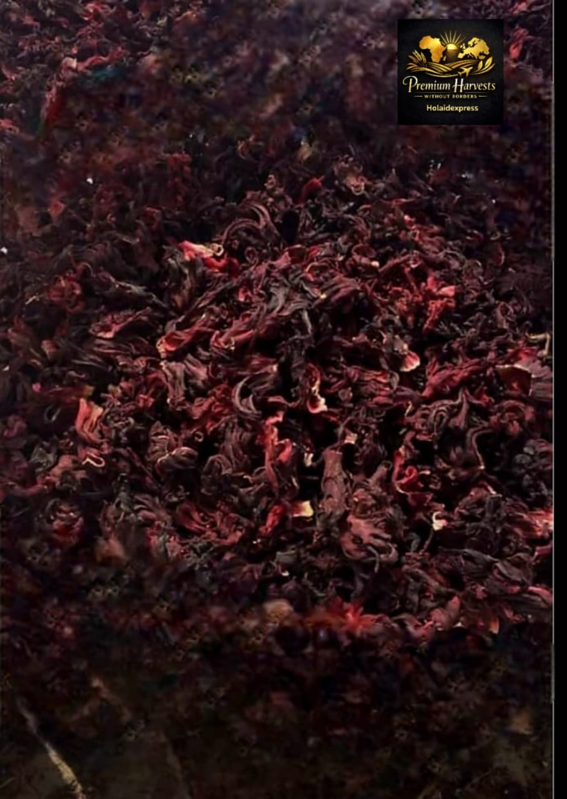
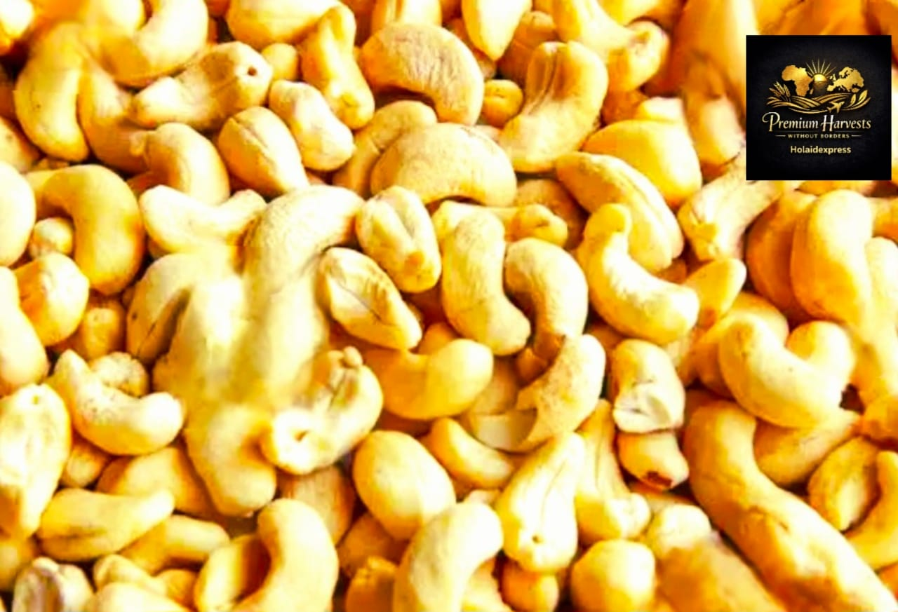
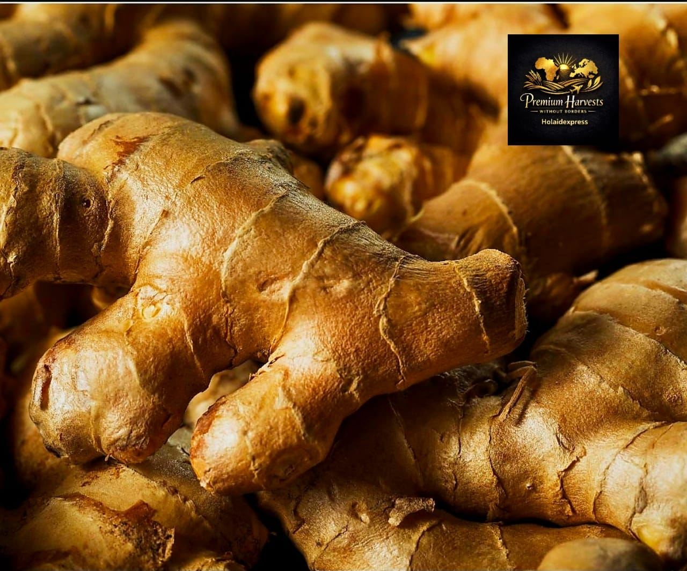
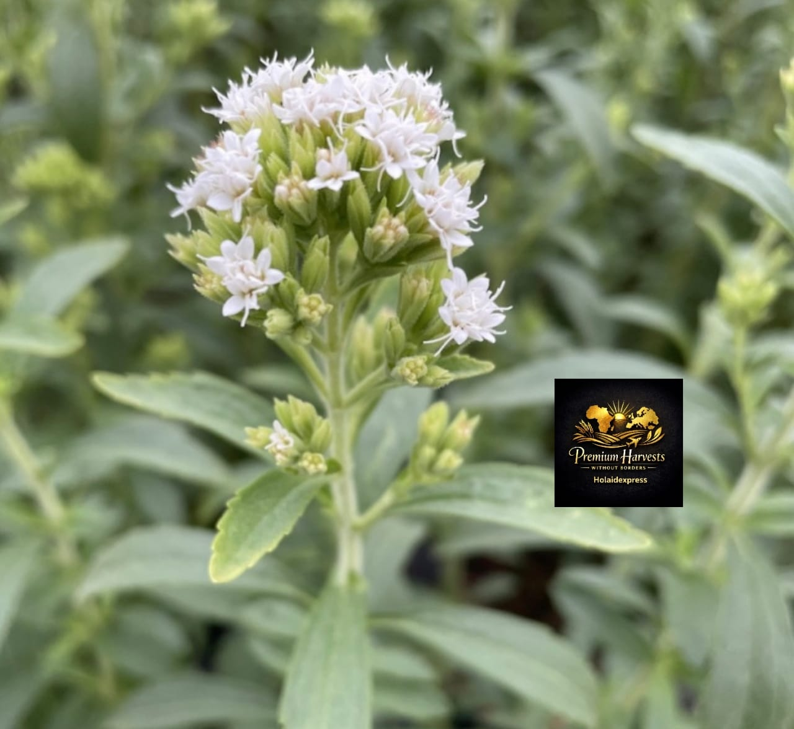
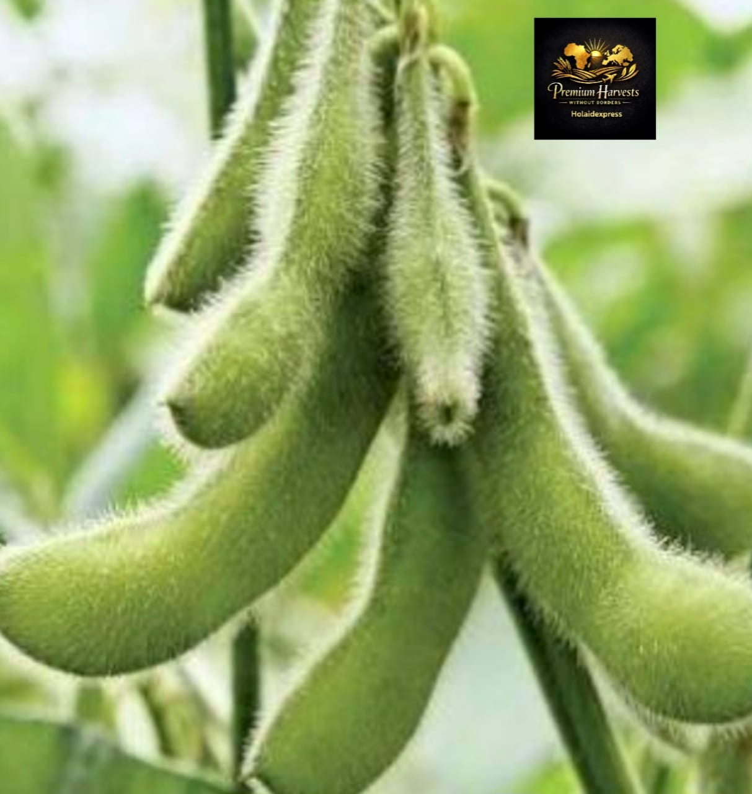

Hibiscus (Hibiscus sabdariffa)
Hot SellerPremium dried hibiscus flowers for tea, beverages, and pharmaceutical applications. Rich in antioxidants, naturally caffeine-free. Sourced from Kano, Jigawa, and Borno states.
Origin
Nigeria (Kano, Jigawa, Borno)
Moisture
Max 12%
Color
Deep red/crimson
Packaging
25kg PP bags or buyer's spec
Applications
Target European Markets
- Herbal tea blenders in Germany, UK, and France
- Pharmaceutical companies across Europe
- Natural cosmetics manufacturers
- Health food and wellness distributors

Sesame Seeds (Sesamum indicum)
High DemandHigh-oil content white and black sesame seeds. Premium quality for confectionery, oil extraction, and tahini production. Sourced from Nasarawa, Benue, and Kogi states.
Origin
Nigeria (Nasarawa, Benue, Kogi)
Oil Content
Min 48%
Types
White (hulled/unhulled), Black
Packaging
50kg PP bags or 25kg paper bags
Applications
Target European Markets
- Confectionery manufacturers in Poland, Germany, Netherlands
- Specialty oil mills and processors
- Middle Eastern food producers (tahini, halva)
- Bakery ingredient suppliers

Cashew Nuts (Anacardium occidentale)
Premium GradePremium raw cashew nuts and processed kernels. W320, W240, W180 grades available. Strict aflatoxin control compliant with EU limits. Sourced from Ogun, Oyo, Kogi, and Enugu states.
Origin
Nigeria (Ogun, Oyo, Kogi, Enugu)
KOR
48-52 lbs (export grade)
Aflatoxin
Max 4-5 ppb (EU compliant)
Packaging
50kg jute bags (raw), 10kg/25kg vacuum packs
Applications
Target European Markets
- Snack food manufacturers in Germany, Netherlands, UK
- Supermarket chains (private label programs)
- Confectionery and chocolate industry
- Cashew roasters and processors

Shea Butter (Vitellaria paradoxa)
Cosmetic GradePremium Grade A shea butter - raw unrefined and refined options. Organic and conventional available. Sustainably sourced from women's cooperatives in Niger, Kwara, Oyo, and Kogi states.
Origin
Nigeria (Niger, Kwara, Oyo, Kogi)
FFA (Unrefined)
Max 5%
FFA (Refined)
Max 0.2%
Packaging
25kg cartons, 200kg drums
Applications
Target European Markets
- Cosmetics manufacturers in France, Germany, UK
- Natural and organic beauty brands
- Chocolate and confectionery industry (cocoa butter equivalent)
- Pharmaceutical and dermatological companies

Cocoa (Theobroma cacao)
Export GradeFermented and dried cocoa beans from Nigeria's premium cocoa belt. Forastero and Trinitario varieties. Grade 1 export quality from Ondo, Ogun, Cross River, and Akwa Ibom states.
Origin
Nigeria (Ondo, Ogun, Cross River, Akwa Ibom)
Grade
Export Grade 1 (fermented 6-7 days)
Moisture
Max 7.5%
Packaging
60-65kg jute bags
Target European Markets
- Chocolate manufacturers in Belgium, Germany, Switzerland, UK
- Cocoa processors and grinders
- Artisan and craft chocolatiers

Ginger (Zingiber officinale)
Dried split ginger and fresh ginger. High oleoresin content, strong aroma and flavor profile. Sourced from Kaduna, Nasarawa, and Gombe states.
Origin
Nigeria (Kaduna, Nasarawa, Gombe)
Type
Air-dried split ginger, sun-dried
Moisture
Max 10%
Packaging
50kg PP bags
Target European Markets
- Spice companies in Netherlands, UK, Germany
- Food processing and flavoring industry
- Pharmaceutical extractors
- Beverage and soft drink manufacturers

Stevia (Stevia rebaudiana)
Natural SweetenerDried stevia leaves and crude extracts. Natural zero-calorie sweetener for food and beverage industry. High Rebaudioside A content varieties available.
Origin
Nigeria (selected farms)
Form
Dried leaves, powder, crude extract
Rebaudioside A
High content varieties
Packaging
20kg cartons (leaves), 5kg drums (extract)
Target European Markets
- Natural sweetener companies in Germany, UK, France
- Soft drink and beverage manufacturers
- Health food and functional food producers
- Diabetic and low-calorie food specialists

Soya Beans (Glycine max)
Non-GMO and conventional soya beans for food and feed applications. High protein content. Sourced from Benue, Kaduna, and Niger states.
Origin
Nigeria (Benue, Kaduna, Niger)
Protein
Min 35% (dry basis)
Oil
Min 18%
Packaging
50kg PP bags or bulk
Target European Markets
- Animal feed compounders in Netherlands, Germany, Spain
- Soy milk and tofu producers
- Vegetable oil processors
- Organic feed specialists

Sunflower Seeds (Helianthus annuus)
Confectionery and oil-grade sunflower seeds. High-oil and high-oleic varieties available.
Type
Confectionery (striped), Oilseed (black)
Oil Content
40-50% (oil varieties)
Moisture
Max 9%
Packaging
25kg/50kg bags
Target European Markets
- Sunflower oil mills across Eastern and Western Europe
- Snack and confectionery industry
- Bird feed and pet food manufacturers
- Bakery topping suppliers
Cowpea/Black Eye Beans (Vigna unguiculata)
Premium dried cowpeas including black eye beans and brown varieties. Clean, uniform size. Sourced from Kano, Borno, and Zamfara states.
Origin
Nigeria (Kano, Borno, Zamfara)
Moisture
Max 14%
Size
Uniform, sorted
Packaging
50kg PP bags
Target European Markets
- Ethnic food importers in UK, France, Netherlands
- Canned food processors
- Health food and vegan markets
- African and Caribbean food distributors

Cassia Tora Seeds (Cassia obtusifolia)
Dried cassia tora seeds for gum production, animal feed, and traditional medicine.
Origin
Nigeria (Northern regions)
Purity
Min 95%
Moisture
Max 9%
Packaging
50kg PP bags
Target European Markets
- Food gum and thickener manufacturers
- Animal feed compounders
- Pet food industry
- Traditional medicine and supplement processors

Cassava Chips
Dried cassava chips for animal feed and industrial starch production. Low moisture, high quality. Sourced from Ogun, Oyo, and Kogi states.
Origin
Nigeria (Ogun, Oyo, Kogi)
Moisture
Max 14%
Starch Content
Min 65%
Packaging
50kg PP bags or bulk
Target European Markets
- Animal feed manufacturers in Netherlands, Germany, Belgium
- Starch and ethanol processors
- Pet food industry
- Dairy feed compounders

Bitter Kola (Garcinia kola)
Pharmaceutical GradeDried bitter kola nuts for pharmaceutical, nutraceutical, and traditional medicine applications. High kolaviron content. Sourced from Ogun, Ondo, and Osun states.
Origin
Nigeria (Ogun, Ondo, Osun)
Size
Whole nuts, cut/powdered available
Moisture
Max 10%
Packaging
25kg cartons
Target European Markets
- Pharmaceutical companies in Germany, UK, France
- Nutraceutical and supplement manufacturers
- Herbal medicine distributors
- Research institutions and laboratories